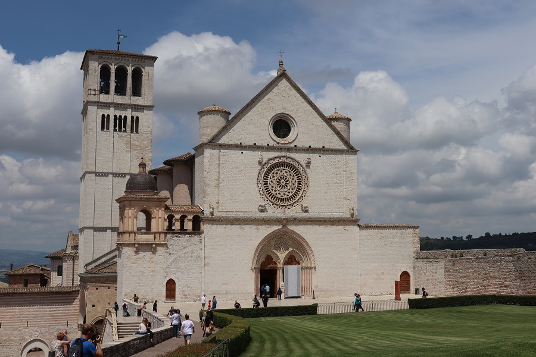
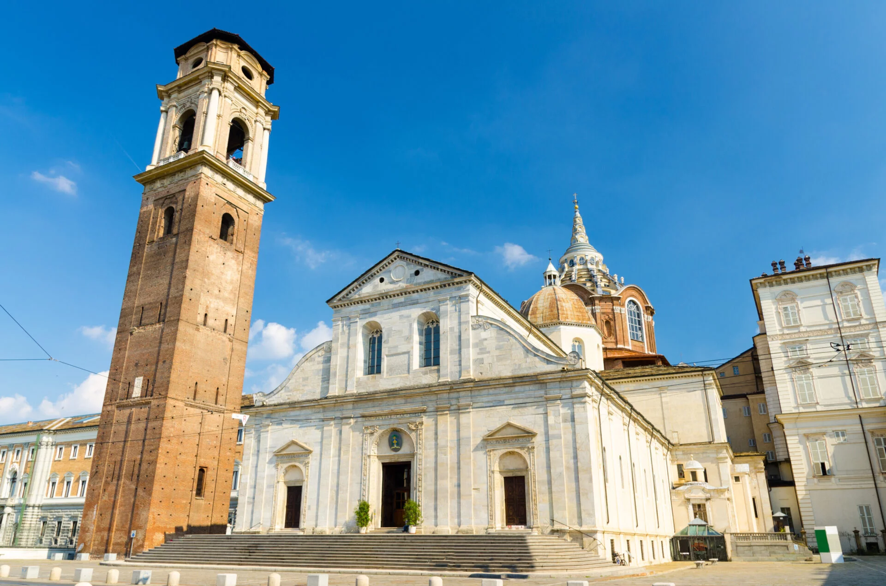
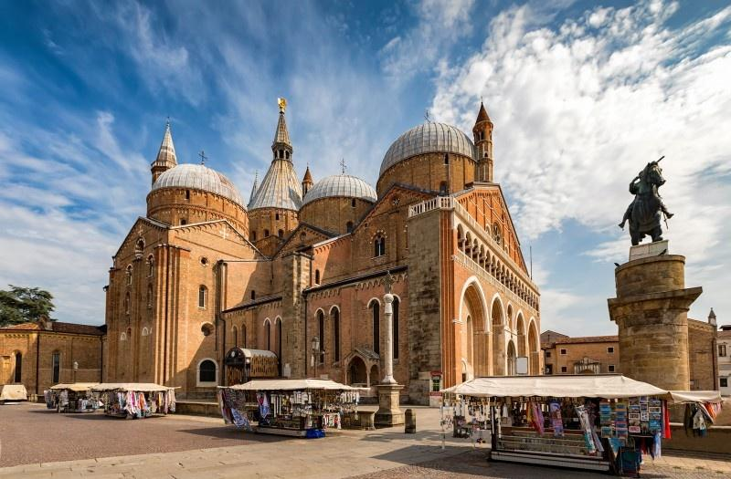

Religie/Kościoły
| Religie/koscioły | Liczba wiernych | Procent ludności |
|---|---|---|
| Kościół rzymskokatolicki | 39 661 400 | 71,1% |
| Islam | 1 008 900 | 3,32% |
| Prawosławni | 1 777 200 | 2,94% |
| Protestanci | 688 100 | 1,14% |
| Buddyści | 292 900 | 0,48% |
| Świadkowie Jehowy | 250 624 | 0,41% |
| Hinduiści | 192 500 | 0,32% |
źródło: wikipedia
Budynki Religijne

Bazylika św. Piotra w Watykanie rzymskokatolicka bazylika na Wzgórzu Watykańskim, zbudowana w latach 1506–1626, na miejscu starszej bazyliki wczesnochrześcijańskiej, fundacji cesarza Konstantyna Wielkiego, jedna z czterech bazylik większych Rzymu oraz jedna z wielu bazylik papieskich (dawniej patriarchalnych), sanktuarium, jeden z najważniejszych ośrodków pielgrzymkowych.
Bazylika Świętego Franciszka XIII-wieczny kościół poświęcony św. Franciszkowi z Asyżu, znajdujący się w umbryjskim mieście Asyż. Bazylika została zbudowana na Wzgórzu Piekielnym, podarowanym zakonowi przez mieszkańca Asyżu, Szymona Pucciarellego. Reguła zakonu nie pozwala na posiadanie dóbr, zatem teren ten już od 1228 stanowił własność Stolicy Apostolskiej. Dzień po kanonizacji św. Franciszka, w dniu 17 lipca 1228, papież Grzegorz IX poświęcił miejsce budowy i zmienił nazwę wzgórza na Wzgórze Rajskie.
Sanktuarium Matki Bożej Różańcowej w Pompejach to jedno z najważniejszych sanktuariów maryjnych we Włoszech. Zostało założone w XIX wieku przez bł. Bartolo Longo, byłego ateistę, który po nawróceniu szerzył kult Różańca Świętego. Świątynia słynie z cudownego obrazu Matki Bożej Pompejańskiej, przed którym wierni odmawiają Nowennę Pompejańską. Jest to ważne miejsce pielgrzymkowe, odwiedzane przez tysiące wiernych każdego roku.
Katedra Metropolitalna Św. Jana Chrzciciela w Turynie (wł. Duomo di Torino) – najważniejszy kościół katolicki Turynu. Znana z przechowywanego w jej bocznej kaplicy Całunu Turyńskiego. Powstała w latach 1491–1498, prawdopodobnie jako dzieło Meo del Caprina. Kaplica Całunu została dobudowana w latach 1668–1694.
Papieskie Sanktuarium Santa Casa z Loreto (wł. Santa Casa di Loreto) – rzymskokatolickie sanktuarium Świętego Domku we włoskim Loreto. Sanktuarium Domu Świętego składa się z XV-wiecznej bazyliki oraz ze starożytnego Santa Casa. Na całym świecie znajdują się kopie Świętego Domku, wokół których tworzone są sanktuaria nazywa się je domkami loretańskimi. Pod koniec XIX wieku spowiednikami w Loreto byli franciszkanie Leon Noras i Franciszek Kurpas, a sanktuarium określano wówczas mianem „włoskiej Częstochowy”.
Papieska bazylika św. Antoniego w Padwie (it. Basilica Pontificia di Sant’Antonio di Padova) – największy kościół w Padwie. Wewnątrz znajduje się grób św. Antoniego Padewskiego (Antoniego z Padwy). Mimo licznych pielgrzymek wiernych z całego świata bazylika ta nie posiada statusu głównego kościoła w mieście. Przez mieszkańców Padwy bazylika nazywana jest „II Santo” (wł. święty).
Sanktuarium św. Michała Archanioła w Monte Sant’Angelo – rzymskokatolickie sanktuarium w Monte Sant’Angelo, w prowincji Foggia, w regionie Apulia we Włoszech, wpisane na listę światowego dziedzictwa UNESCO. Król Karol I Andegaweński ufundował obecną nawę oraz dzwonnicę. Od 1996 roku sanktuarium opiekują się polscy księża ze zgromadzenia św. Michała Archanioła, potocznie zwani michalitami.